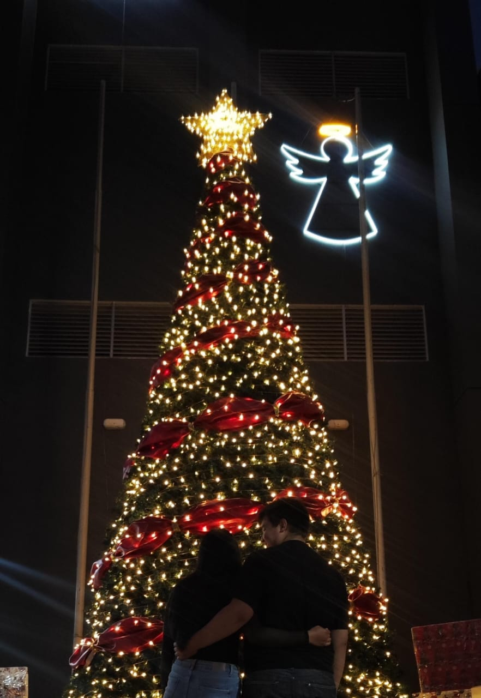

Hola Daiana…
Mi panqueque, mi cuchurrumi, mi amor, mi corazón, mi bb, mi nalgona hermosa, mi cielo, mi todo.
Desde el día que te conocí, algo en mí cambió para siempre. No fue solo tu belleza —que es de otro mundo, por cierto— sino cómo se siente estar cerca de ti. Cómo se detiene todo. Cómo tu sonrisa le gana incluso al peor de mis días.
Todavía no entiendo cómo alguien tan hermosa, tan buena, tan fuerte, puede estar conmigo. A veces me miro en el espejo y me pregunto cómo logré que alguien como tú me diga “te amo”. Porque tú no eres solo una chica bonita. Eres fuego, ternura, hogar. Eres todo lo que necesitaba sin saberlo.
Llegaste justo cuando yo no confiaba en nadie. Cuando ya había decidido no abrirme más, no arriesgarme, no entregar más de mí. Pero tú… tú entraste sin pedir permiso. Poco a poco, pero firme. Y te llevaste mis muros como si fueran papel.
Y no solo eso: me diste una familia, una risa nueva, un motivo para intentar cada día. Me hiciste sentir suficiente. Me hiciste sentir querido. Me hiciste sentir amado de verdad.
Sé que cometo errores. A veces me frustro, me encierro, digo cosas que no debería. Y no porque no te ame, no porque quiera lastimarte… sino porque soy tonto, torpe, inexperto. Pero también soy alguien que te ama como nunca ha amado antes. Y eso me hace querer mejorar.
A veces me siento chico al lado de todo lo que tú eres. Porque tú brillas, Daiana. Brillas sin querer, y yo me siento afortunado de poder verte de cerca. Tú me enseñaste que merezco amor. Me enseñaste que no soy un error, ni un fracaso. Me sacaste de mi cueva. Me hiciste reír cuando ya no quería ni hablar. Me hiciste sentir vida. Me hiciste creer en mí, porque tú creíste primero.
Y por todo eso, por cada palabra, por cada abrazo, por cada gesto… Gracias.
Gracias por no rendirte conmigo. Gracias por darme amor aunque a veces no sepa recibirlo. Gracias por quedarte. Gracias por construir esto conmigo.
Yo sé que no soy perfecto. Sé que fallo. Pero lo que nunca va a fallar, lo que nunca va a cambiar, es que te amo. Con todo lo que soy. Con lo bueno y con lo que todavía estoy sanando.
Y si un día lo dudas, si un día estás cansada, si un día el mundo se te cae encima… quiero que sepas esto:
Yo estoy aquí. Para ti. Por ti. Con ti. Siempre.
Un mes más contigo es un mes más de felicidad. Porque contigo, cada día es mejor. Porque tú eres la razón por la que todo vale la pena. Y si pudiera elegir una y otra vez, te volvería a elegir siempre a ti.
Quiero seguir soñando contigo. Irnos de viaje, dormir abrazados, pelear por qué serie ver, cocinar juntos y que tú me enseñes a hacer las cosas con amor. Quiero ver tu cara dormida en la mañana, abrazarte en tus días malos, y bailar contigo incluso sin música.
Quiero todo contigo, Daiana.
Porque si me preguntas qué es lo más bonito que me ha pasado, no tengo que pensarlo: La respuesta eres tú.
Perdón si te lastimo a veces. Perdón si no siempre soy el mejor. Pero de lo que puedes estar segura es que este tontín, este cuchurrumi, este novio medio idiota que tienes… te ama profundamente.
Y eso no va a cambiar nunca.
Te amo. Hoy, mañana, y todos los días que vengan. Con todo.
— Tu tontín eternamente enamorado 💖
